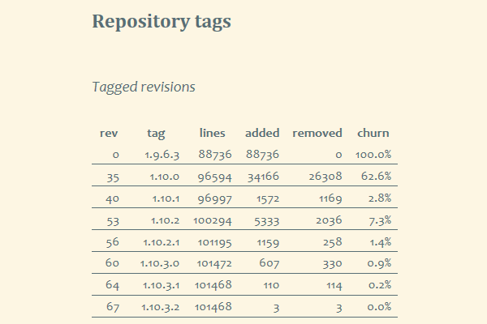
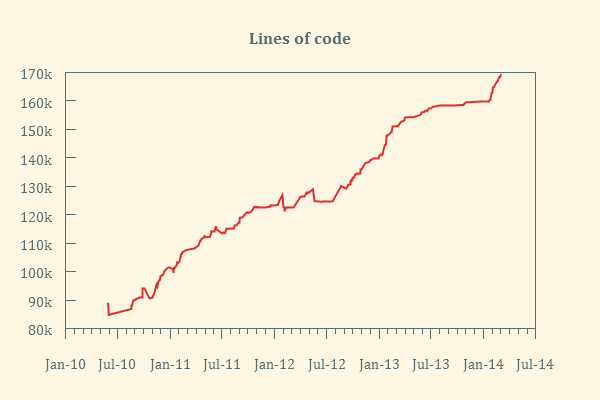
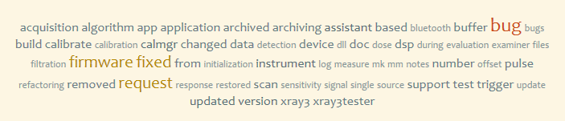

risorse | StatHg
StatHg è un insieme di script che analizzano un repository Mercurial allo scopo di descrivere la dinamica dello sviluppo di un progetto software, alla stregua di quanto StatSVN fa per Subversion.
Il processo si articola in tre fasi:
L'archivio viene analizzato per tutto l'arco della sua evoluzione, un changeset dopo l'altro; il numero di revisione dell'ultimo changeset viene determinato con il comando:
hg log -l 1 --template "{rev}"
Di ogni changeset si raccolgono gli attributi principali con il comando:
hg log -r %REV% --template "{rev}|{node|short}|{date|isodatesec}|{author}|{tags}|{desc}"
L'insieme dei file coinvolti nel changeset è ottenuto tramite il comando:
hg status --change %REV%
Viene infine determinato il numero di righe modificate in ogni file, basandosi sulle indicazioni fornite dal comando:
hg diff --change %REV% %PATH%
Il conteggio del numero di linee aggiunte o eliminate avviene solo per alcuni file, selezionati secondo l'estensione:
I file di testo (*.txt, *.md, *.htm, ...) non sono considerati perché non necessariamente organizzati a linee, e comunque sostanzialmente ininfluenti — se non fonte di rumore — per le considerazioni sull'ampiezza della base di codice.
Lo schema dati è costituito da due entità, changeset e change:
+----------------------+
+--------------+ | change |
| changeset | +----------------------+
+--------------+ | id integer |
| id integer |<-------| changeset_id integer |
| node text | | action text |
| date text | | path text |
| user text | | ins_lines integer |
| tag text | | del_lines integer |
| desc text | +----------------------+
+--------------+
Rappresenta un changeset di Hg, ed è caratterizzato da:
Rappresenta le modifiche effettuate ad un singolo file, ed è caratterizzato da:
Segue l'elenco dei report generati da StatSVN e la query statHg associata.
select cs.id rev, cs.date date, cs.tag tag, sum(c.ins_lines - c.del_lines) loc from changeset cs inner join change c on (c.changeset_id <= cs.id) group by rev order by rev;
Non disponibile. Il repository di riferimento è privato, quindi con un unico sviluppatore che ha in carico l'intera code-base.
select tags.tagged_id, cs.tag, sum(c.ins_lines), sum(c.del_lines) from ( select cs1.id id, max(cs2.id) tagged_id from changeset cs1, changeset cs2 where cs2.tag <> '' and cs2.id <= cs1.id group by cs1.id) tags left join changeset cs on tags.tagged_id = cs.id left join change c on c.changeset_id = tags.id group by tags.tagged_id, cs.tag having sum(c.ins_lines) > 0 and sum(c.del_lines) > 0;
Nota: viene determinato solo il numero di linee modificate.
Non disponibile. Ricavabile dall'analisi del file-system.
Non disponibile. Il repository di riferimento è privato, quindi con un unico sviluppatore che ha in carico l'intera code-base.
Non disponibile. Il repository di riferimento è privato, quindi con un unico sviluppatore che ha in carico l'intera code-base.
Non disponibile. Il repository di riferimento è privato, quindi con un unico sviluppatore che ha in carico l'intera code-base.
Non disponibile. Il repository di riferimento è privato, quindi con un unico sviluppatore che ha in carico l'intera code-base.
select cs.user, sum(c.ins_lines) ins_lines, sum(c.del_lines) del_lines from changeset cs, change c where c.changeset_id = cs.id group by cs.user;
select
strftime('%H', substr(date, 1, 16), substr(date, 18, 3) || ' hours') hour,
count(1)
from changeset
group by hour;
select
strftime('%w', substr(date, 1, 16), substr(date, 18, 3) || ' hours') day,
count(1)
from changeset
group by day;
Nota: 0 = domenica, 0 = lunedì, ...
select
strftime('%w', substr(date, 1, 16), substr(date, 18, 3) || ' hours') day,
strftime('%H', substr(date, 1, 16), substr(date, 18, 3) || ' hours') hour,
count(1) activity
from changeset
group by day, hour;
Nota: 0 = domenica, 0 = lunedì, ...
select id, user, date, desc from changeset where substr(date, 1, 7) = '%(year)s-%(month)s' order by id desc;
Nota: elenco dei commit dell'ultimo mese.
Nota: in alternativa si può fornire l'elenco degli ultimi N commit.
TODO: aggiungere il numero di linee aggiunte/rimosse, elencare i file del changeset.
select cs.id rev, cs.date date, cs.tag tag, sum( case when c.action='A' then 1 when c.action='R' then -1 else 0 end) file_count from changeset cs inner join change c on (c.changeset_id <= cs.id) where ins_lines is not null group by rev order by rev;
select rev, date, tag, loc, file_count, loc * 1. / file_count
from (
select
cs.id rev,
cs.date date,
cs.tag tag,
sum(c.ins_lines - c.del_lines) loc,
sum(
case
when c.action='A' then 1
when c.action='R' then -1
else 0
end) file_count
from
changeset cs
inner join change c on (c.changeset_id <= cs.id)
where ins_lines is not null
group by rev)
order by rev;
Non disponibile. Ricavabile dall'analisi del file-system.
Non disponibile. Ricavabile dall'analisi del file-system.
select path, count(1) rev_count from change group by path having rev_count >= 10 order by rev_count desc limit 20;
TODO
TODO
select cs.id rev, cs.date date, cs.tag tag, sum(min(c.ins_lines, c.del_lines)) modified, sum(max(0, c.ins_lines - c.del_lines)) added, sum(max(0, c.del_lines - c.ins_lines)) removed from changeset cs, change c where c.changeset_id = cs.id group by rev order by rev;
Nota: ins_lines + del_lines = added + removed + 2 × modified.
Vengono generati due tipologie di prospetti, tabellari e grafici. I primi sono ottenuti a partire da una serializzazione in formato XML dei risultati della query associata per essere successivamente trasformati in HTML via XSLT, mentre quelli grafici sono ottenuti diagrammando i contenuti di un file CSV tramite gnuplot:
Esempio di prospetto tabellare
Esempio di prospetto grafico
Uno script batch si occupa di lanciare in successione le tre fasi della procedura:
analisi del repository Hg: lo script build-db.py raccoglie all'interno di un database sqlite temporaneo i dati grezzi del repository ricavati dai comandi Hg sopra elencati;
raccolta delle statistiche: lo script run-queries.py interroga il database e salva i risultati in file XML/CSV temporanei;
creazione dei prospetti: lo script merge-reports.py si occupa di compilare i prospetti XML parziali in un unico file XML, mentre i file CSV sono inoltrati a gnuplot per la generazione dei prospetti grafici (cfr. cartella degli script gp); il file XML, corredato dai file immagine dei prospetti grafici, da un'apposita trasformazione XML/HTML e da un foglio di stile dedicato viene infine salvato in una specifica cartella.
La cancellazione dei file temporanei conclude la procedura.
La scelta di usare un database sqlite consente con poca fatica di produrre il tag-cloud dei messaggi di commit, grazie all'estensione FTS4 ed in particolare alla tabella virtuale fts4aux:
create virtual table tag_cloud using fts4(message); create virtual table tag_cloud_aux using fts4aux(tag_cloud); -- a tabella changeset già popolata! insert into tag_cloud select desc from changeset;
È facile a questo punto determinare la frequenza relativa di tutti i termini indicizzati; per limitare i risultati alle parole chiave più significative, vengono ignorati quelli costituiti da una sola lettera, quelli presenti una volta sola, oltre ai numeri e alle stop-word più comuni:
select term, sum(occurrences) as occurrences, length(sum(occurrences)) score from tag_cloud_aux where length(term) > 1 and cast(term as numeric) = '0' and term not in ( 'a', 'about', 'added', 'after', 'all', 'an', 'and', 'as', 'by', 'changeset', 'does', 'for', 'in', 'into', 'is', 'of', 'on', 'new', 'not', 'now', 'some', 'tag', 'that', 'the', 'to', 'too', 'when', 'with') group by term having occurrences > 1 order by occurrences desc;
Per agevolare la costruzione del tag-cloud, a ciascun termine viene assegnato un indice di importanza che corrisponde al numero di cifre di cui è composto il conteggio delle occorrenze: i termini che compaiono da due fino a nove volte sono di indice 1, quelli il cui numero è compreso tra dieci e novantanove sono di indice 2 e così via. Definendo per ogni indice uno stile apposito, via via più appariscente all'aumentare dell'indice, e assegnando ad ogni termine lo stile relativo all'indice, si ottiene il tag-cloud:
Esempio di tag cloud
Nota: le versioni 2.6 e 2.7 di Python per Windows non supportano l'estensione FTS4 di sqlite (vedere ad esempio la domanda n. 3823659 su Stack Overflow). Basta tuttavia sostituire la DLL <PYTHON_INSTALL_DIR>\DLLs\sqlite.dll con quella scaricabile dalla pagina dei download di sqlite.
Qui un esempio di prospetto completo di tag-cloud.
Pagina modificata il 27/05/2014